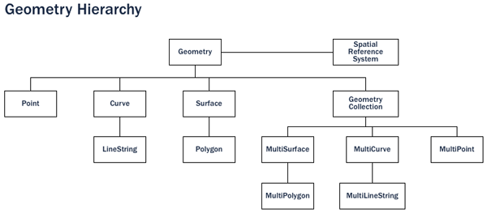
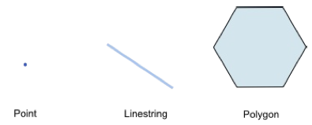
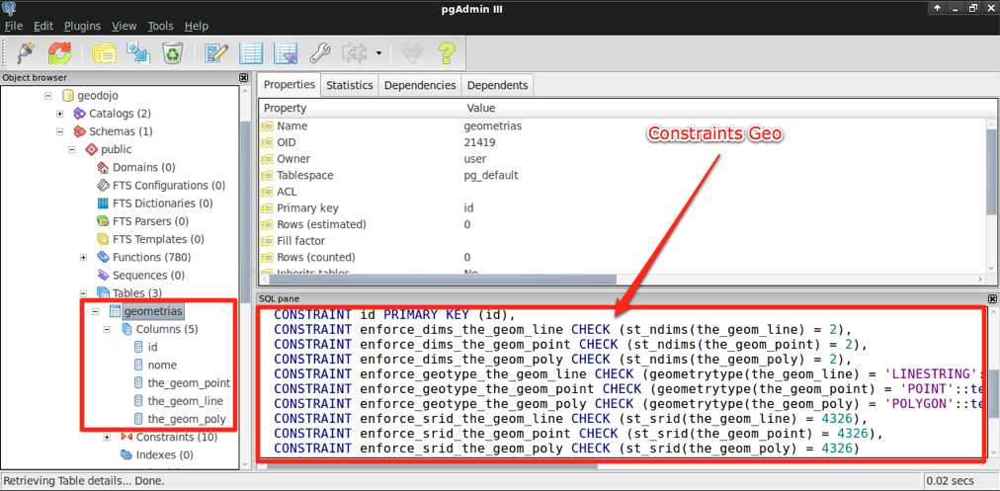
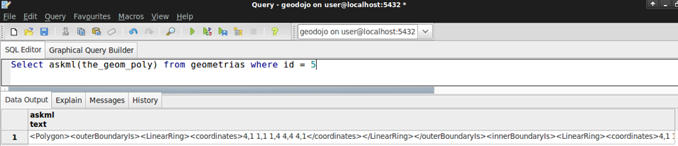
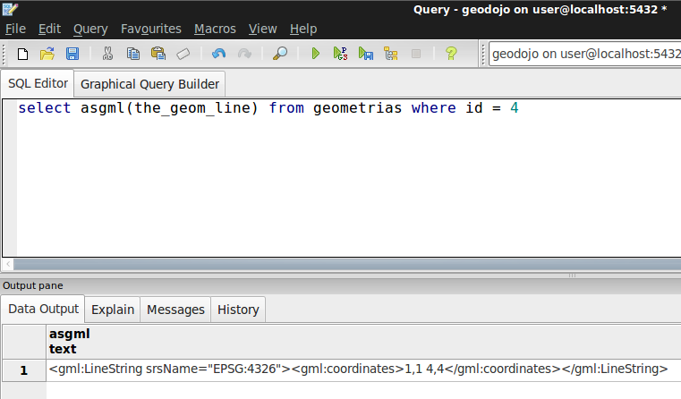
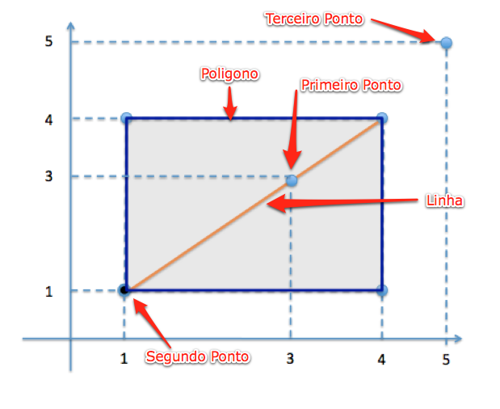

Contents
Neste capitulo do roteiro, iremos abordar questões relacionadas ao banco de dados postgis. O PostGIS estende o PostgreSQL, seguindo as especificações da SFSSQL. O PostgreSQL é um sistema de gerência de banco de dados objeto-relacional, gratuito e de código fonte aberto. Foi desenvolvido a partir do projeto Postgres, iniciado em 1986, na Universidade da Califórnia em Berkeley.
Postgis é um banco de dados espacial. Oracle Spatial e SQL Server 2008 também são banco de dados espacial. Mas o que isso quer nos dizer? Qual a diferença? É um novo banco de dados que veio para revolucionar o mundo? :)
A resposta mais direta seria...
Banco de Dados Espacial é capaz de armazenar e manipular dados espaciais da mesma forma que manipula os demais tipos de dados na base de dados
Ao adicionar em um SGBD o seu cartucho espacial, estamos adicionando 3 itens ao mesmo:
- Tipo de dados espacial;
- Indexação espacial para otimizar a manipulação de dados espaciais;
- Funções espaciais para manipular os dados espaciais;
Bancos de dados tradicionais possuem string, numeros e datas. Os bancos de dados espaciais incluiram tipos adicionais de dados para armazenar a representação espacial de uma feição. No postgis este tipo de dado é denominado geometry. Na sua forma genérica qualquer representação espacial é uma geometria mas se formos descer o nível podemos encontrar uma taxonomia com outros tipos de dados que derivam de geometria.
Para este curso vamos aprender a trabalhar com 3 tipos básico de representação de dados espacial:

- Ponto = (X , Y)
- Linha = (Ponto 1 , Ponto 2) = ( (X , Y) , (X , Y) )
- Poligono = (Ponto 1 , Ponto 2, Ponto 3 , Ponto 1) = ( (X , Y) , (X , Y) , (X , Y) , (X , Y) )
A partir deste momento já temos o nosso banco pronto para iniciar os trabalhos.
Para este exemplo inicial iremos criar 3 colunas de dados geometricos para a mesma tabela. Uma para armazenar ponto, outra para armazenar linha e finalmente uma para armazenar um poligono. Note que as boas práticas definem que uma tabela deve possuir apenas uma coluna de dado geográfico. Por questóes de demonstração e tutoria iremos utilizar as 3 colunas.
Utilizamos a função addGeometryColumn do postgis para criar a nossa coluna geometrica. Diferentemente da estrutura de criação de uma coluna de dados convencional, as colunas de dados geométricos precisam ter:
- Regras de validação
- Entrada na tabela geometry columns
4.1 - Criação da coluna para armazenar ponto:
SELECT AddGeometryColumn ('geometrias','the_geom_point',4326,'POINT',2);Descrevendo a função temos:
SELECT AddGeometryColumn (<nome da tabela>,<nome da coluna geo>,<srid>,<tipo de dados geo>,<dimensoes>); .. image:: images/add_column_point.png4.2 - Criação da coluna para armazenar linha:
SELECT AddGeometryColumn ('geometrias','the_geom_line',4326,'LINESTRING',2);4.3 - Criação da coluna para armazenar poligono:
SELECT AddGeometryColumn ('geometrias','the_geom_poly',4326,'POLYGON',2);Observer ao final destes passos a estrutura final da tabela

Para inserir dados na tabela, vamos precisar executar scripts de INSERT. Para apoiar a inserção dos dados geo vamos utilizar a funcão ST_GeomFromText. Esta função é responsável por converter uma representação WKT textual da geometria para o formato binário o qual o banco de dados necessita para persistir a informação. Para saber um pouco mais sobre WKT acesse o site http://tinyurl.com/24r9zvu
Inserção de um conjunto de pontos
INSERT INTO geometrias(nome,the_geom_point)
VALUES('Primeiro Ponto', ST_GeomFromText('POINT(3 3)',4326));
INSERT INTO geometrias(nome,the_geom_point)
VALUES ('Segundo Ponto', ST_GeomFromText('POINT(1 1)',4326));
INSERT INTO geometrias(nome,the_geom_point)
VALUES ('Terceiro Ponto', ST_GeomFromText('POINT(5 5)',4326));
Inserção de uma linha
INSERT INTO geometrias(nome,the_geom_line)
VALUES('Primeira Linha', ST_GeomFromText('LINESTRING(1 1, 4 4)',4326));
Inserção de um poligono
INSERT INTO geometrias(nome,the_geom_poly)
VALUES('Primeiro Poligono', ST_GeomFromText('POLYGON((4 1, 1 1, 1 4, 4 4, 4 1),(4 1, 1 1, 1 4, 4 4, 4 1))',4326));
Vamos conferir as geometrias inseridas na tabela:
Select * from geometrias
Para transformar o dado da coluna geometrica para uma representação WKT utilizamos a função astext:
Select astext(the_geom_point) from geometrias where id = 1
O postgis tambem oferece inumeros formatos de saida como KML e GML:
Select askml(the_geom_poly) from geometrias where id = 5
Select asgml(the_geom_line) from geometrias where id = 4
Resultado KML
Resultado GML
A representação espacial destas 5 geometrias inseridas seria algo parecido com a representação abaixo.
Para a nossa aplicação vamos precisar utilizar uma serie de layers de informação geográficas vetoriais oriundas do provedor IBGE. Estas informações estão disponiveis no formato shapefile e podem ser baixadas a partir do site do IBGE. http://www.ibge.gov.br. Para facilitar o trabalho deste minicurso os arquivos foram baixados e estão disponiveis no caminho ~/Desktop/GeoDojoEnv/data.
Vamos importar dados para construir as camadas de:
- Paises Vizinhos
- Municipios
- Trechos Rodoviarios
- Picos
- Pontes
- Postos Fiscais
- Aeroportos
Abrir o console do linux no local onde estão os arquivos shapefiles de municipioMMA
Executar a ferramenta SHP2PGSQL para a geração do script sql contendo os comandos de insert que será utilizado para inserir os dados do shape na base de dados geodojo do nosso postgres:
Estrutura: shp2pgsql -s <SRID> dado.shp nome_tabela > nome_arquivo.sql
$ shp2pgsql -s 4326 municipsocio.shp municipio > municipio.sql
Executar o script municipio.sql gerado no passo anterior no banco de dados:
$ sudo su - {senha user}
$ su postgres
$ psql -U postgres -d geodojo -f municipio.sql
Verificando a criação da tabela e importação dos dados no pgAdmin
Para poupar tempo na importação das camadas existe um script que foi criado para a criação de todas as camadas de uma só vez:
$ cd ../mergedShapes/
$ ./import.sh
Para questões de performance vamos executar o script index.sh que é responsavel pela criação dos indices espaciais para todas as tabelas
$ ./index.sh
Verificando a criação de todas as tabelas restantes no pgAdmin
Para obtermos os poligonos dos estados precisamos realizar uma operação espacial. O postgis disponibiliza uma função ST_UNION que é capaz de unir um conjunto de poligonos e gerar apenas um único poligono. Vamos utilizar esta função para agrupar os poligonos dos municipios de um estado e obter o mesmo.
Executar a instrução sql para criação da tabela de UF:
CREATE TABLE uf
(
id serial NOT NULL,
nome character varying(254),
the_geom geometry,
CONSTRAINT uf_pkey PRIMARY KEY (id),
CONSTRAINT enforce_dims_the_geom CHECK (st_ndims(the_geom) = 2),
CONSTRAINT enforce_geotype_the_geom CHECK (geometrytype(the_geom) = 'MULTIPOLYGON'::text OR the_geom IS NULL),
CONSTRAINT enforce_srid_the_geom CHECK (st_srid(the_geom) = 4326)
)
WITH (
OIDS=FALSE
);
ALTER TABLE uf OWNER TO postgres;
Executar a instrução sql para união e geração das geometrias dos estados:
INSERT INTO uf (nome,the_geom)
SELECT uf, multi(ST_UNION(the_geom)) from municipio group by uf
Note que a operação de união é uma das funções de grande custo computacional logo a mesma pode demorar alguns segundos para ser executada.
A potencialidade de um banco de dados espacial é avaliada numa situação como a descrita neste tópico: Precisamos realizar um “join” entre o estado de são paulo e as estradas brasileiras sendo que na tabela de estradas e rodovias não temos nenhuma associação(chave estrangeira) com a tabela de UF. Como resolver? Simples!... utilizando as funções de análise topológica que possibilite um “join” espacial.
Primeiro vamos criar a consulta que nos retorna os dados que precisamos:
SELECT rodovia.gid, rodovia.sigla, rodovia.the_geom
FROM via_rodoviaria rodovia, uf
WHERE uf.nome = 'SP' AND ST_INTERSECTS(rodovia.the_geom,uf.the_geom)
Agora vamos criar uma view com o resultado da consulta para utilizarmos futuramente no nosso servidor de mapas:
CREATE VIEW rodovias_sp AS
SELECT rodovia.gid, rodovia.sigla, rodovia.the_geom
FROM via_rodoviaria rodovia, uf
WHERE uf.nome = 'SP' AND ST_INTERSECTS(rodovia.the_geom,uf.the_geom)
Primeiro vamos criar a consulta que nos retorna os 10 maiores municipios por população:
SELECT
municipio.nome,
municipio.uf,
CAST(municipio.pop00 as numeric) as populacao,
municipio.the_geom
FROM
public.municipio
ORDER BY
CAST(municipio.pop00 as numeric) DESC
LIMIT 10;
Agora vamos criar uma view para utilizarmos futuramente:
CREATE VIEW municipio_pop AS
SELECT
municipio.nome,
municipio.uf,
CAST(municipio.pop00 as numeric) as populacao,
municipio.the_geom
FROM
public.municipio
ORDER BY
CAST(municipio.pop00 as numeric) DESC
LIMIT 10
Para descobrir a área de um poligono, utilizamos a funcão ST_AREA. Vamos precisar usar a função ST_TRANSFORM para obter os valores de área em metros. Para a função ST_TRANSFORM funcionar corretamente vamos precisar inserir a seguinte linha no banco de dados:
INSERT into spatial_ref_sys (srid, auth_name, auth_srid, proj4text, srtext) values ( 96687, 'sr-org', 6687, '+proj=poly +lat_0=0 +lon_0=-54 +x_0=5000000
+y_0=10000000 +ellps=GRS80 +towgs84=0,0,0,0,0,0,0 +units=m +no_defs ', 'PROJCS["SIRGAS 2000 / Brazil Polyconic",GEOGCS["SIRGAS 2000",DATUM
["Sistema_de_Referencia_Geocentrico_para_America_del_Sur_2000",SPHEROID["GRS 1980",6378137,298.257222101,AUTHORITY["EPSG","7019"]],TOWGS84
[0,0,0,0,0,0,0],AUTHORITY["EPSG","6674"]],PRIMEM["Greenwich",0,AUTHORITY["EPSG","8901"]],UNIT["degree",0.01745329251994328,AUTHORITY
["EPSG","9122"]],AUTHORITY["EPSG","4674"]],PROJECTION["Polyconic"],PARAMETER["latitude_of_origin",0],PARAMETER["central_meridian",-54],PARAMETER
["false_easting",5000000],PARAMETER["false_northing",10000000],UNIT["metre",1,AUTHORITY["EPSG","9001"]]]');
Na sequencia vamos criar a consulta:
SELECT
municipio.nome,
municipio.uf,
ST_AREA(ST_TRANSFORM(municipio.the_geom,96687)) as area,
municipio.the_geom
FROM
public.municipio
ORDER BY
ST_AREA(municipio.the_geom) DESC
LIMIT 10;
Criar uma view para consultas futuras:
CREATE VIEW municipio_area AS
SELECT
municipio.nome,
municipio.uf,
ST_AREA(ST_TRANSFORM(municipio.the_geom,96687)) as area,
municipio.the_geom
FROM
public.municipio
ORDER BY
ST_AREA(municipio.the_geom) DESC
LIMIT 10;
Primeiro vamos encontrar todas as rodovias que cruzam o estado do rio:
SELECT rodovia.sigla
FROM via_rodoviaria rodovia, uf
WHERE uf.nome = 'RJ' AND ST_INTERSECTS(rodovia.the_geom,uf.the_geom)
Agora vamos calcular o tamanho de cada rodovia em km somente para os trechos que estão dentro do estado do rio:
SELECT
sum(ST_LENGTH(ST_TRANSFORM(
ST_Intersection(rodovia.the_geom,uf.the_geom),96687))
) / 1000 as km,
rodovia.sigla
FROM via_rodoviaria rodovia, uf
WHERE uf.nome = 'RJ' AND ST_INTERSECTS(rodovia.the_geom,uf.the_geom)
GROUP BY rodovia.sigla
Agora vamos calcular o somatorio total em km:
SELECT
sum(ST_LENGTH(ST_TRANSFORM(
ST_Intersection(rodovia.the_geom,uf.the_geom),96687))
) / 1000 as km
FROM via_rodoviaria rodovia, uf
WHERE uf.nome = 'RJ' AND ST_INTERSECTS(rodovia.the_geom,uf.the_geom)
Para finalizar vamos criar uma tabela contendo apenas os trechos das rodovias federais que cruzam o estado do rio. Para cada trecho vamos disponibilizar o valor em km do seu tamanho, a sua sigla e a geometria resultado:
CREATE TABLE trechos_br_rio AS
SELECT
sum(ST_LENGTH(ST_TRANSFORM(
ST_Intersection(rodovia.the_geom,uf.the_geom),96687))
) / 1000 as km,
rodovia.sigla,
ST_Intersection(rodovia.the_geom,uf.the_geom)
FROM via_rodoviaria rodovia, uf
WHERE uf.nome = 'RJ' AND rodovia.sigla like '%BR%' AND ST_INTERSECTS(rodovia.the_geom,uf.the_geom)
GROUP BY rodovia.sigla, rodovia.the_geom, uf.the_geom
Finalizamos os trabalhos desta etapa com o postgis. Na próxima etapa, veremos como acessar bases de dados espaciais na plataforma Java.
{kind=link}
{kind=link}
{kind=link}
{kind=link}
{kind=link}
{kind=link}
{kind=link}
{kind=link}